QSKSw Minecraft Skins
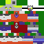
MS Paint (Nostalgia)
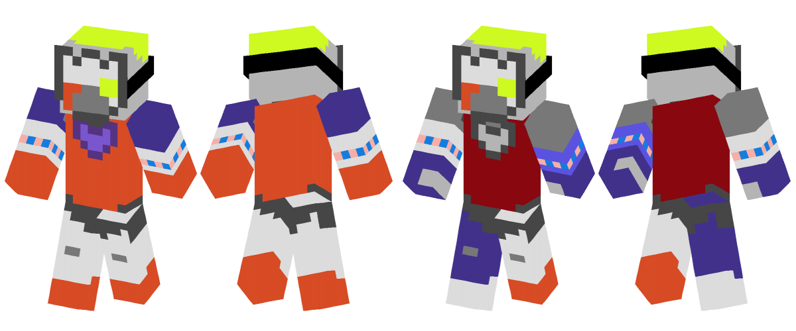
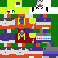
MS Paint (Nostalgia)
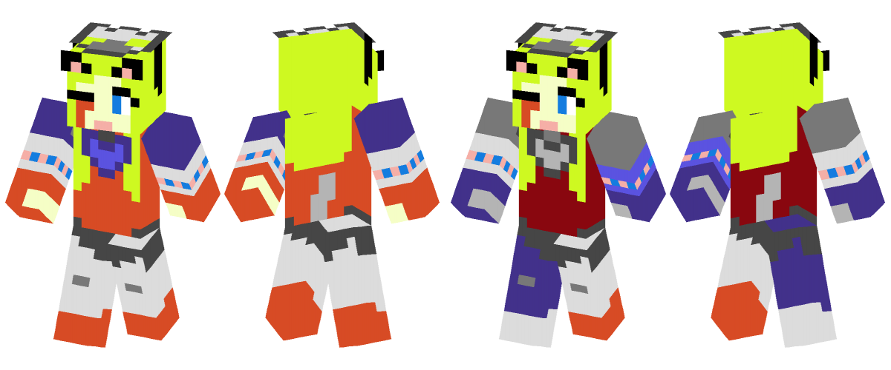
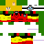
The Fast Runner
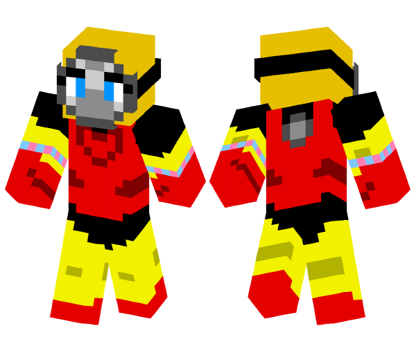
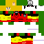
The Fast Runner
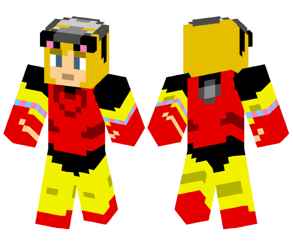
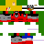
Trauma Recovery (2.0)
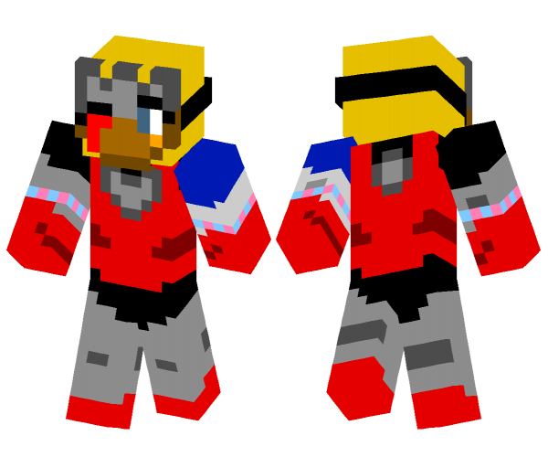
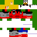
Trauma Recovery (2.0)
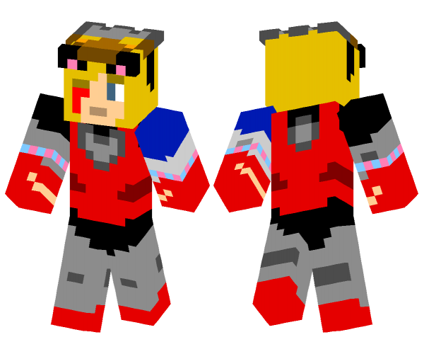
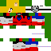
Master of Fire (Standard)
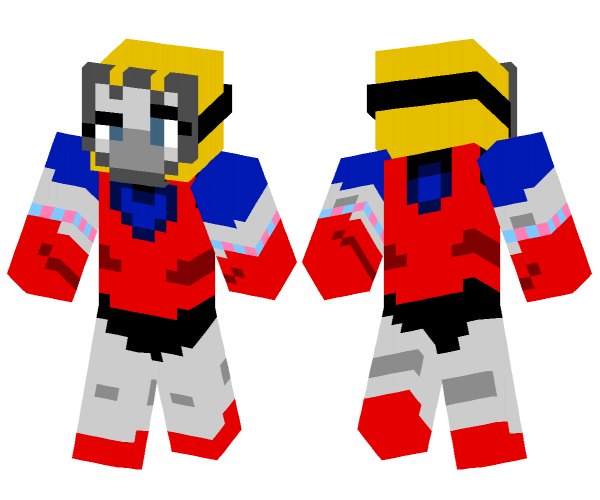
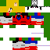
Master of Fire (Standard)
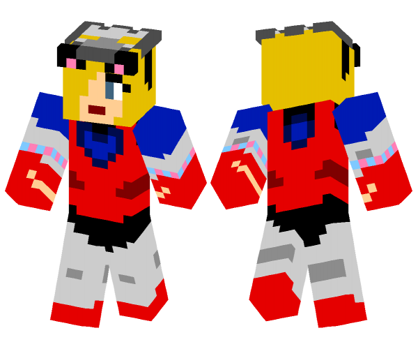
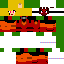
Goddess of Fire (Tahu Day)
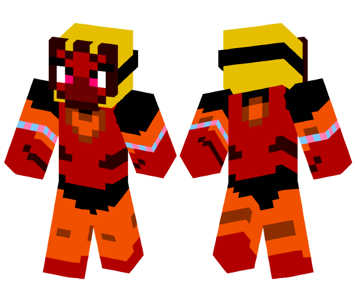
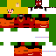
Goddess of Fire (Tahu Day)
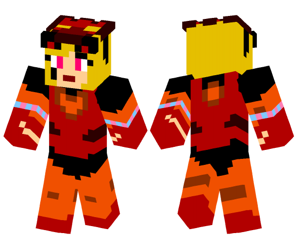
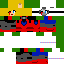
Spare Parts (Ultimate)
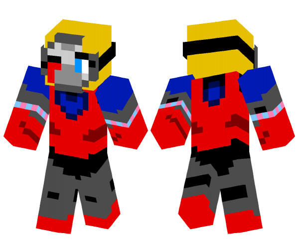
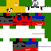
Spare Parts (Ultimate)
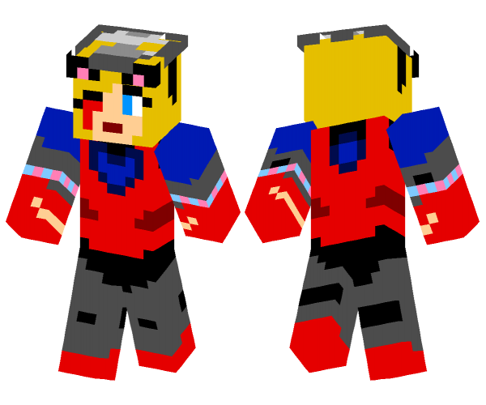
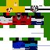
Broken Soul (The End)
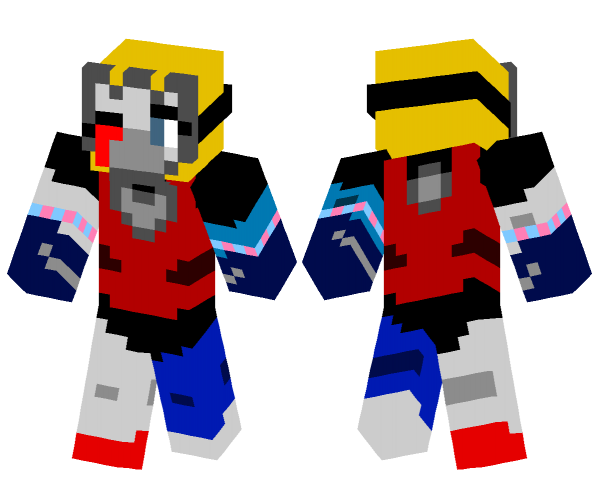
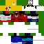
Broken Soul (The End)
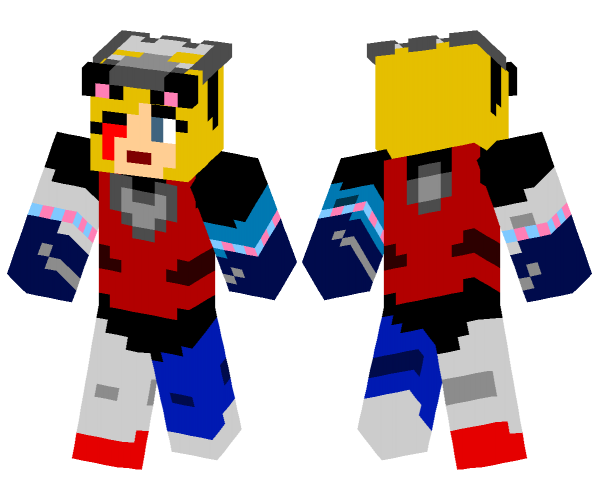
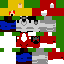
Runaway
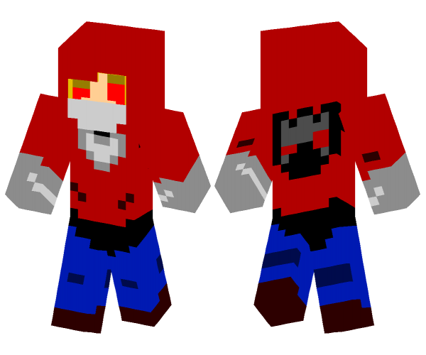
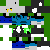
Alone (Minecon 2011)
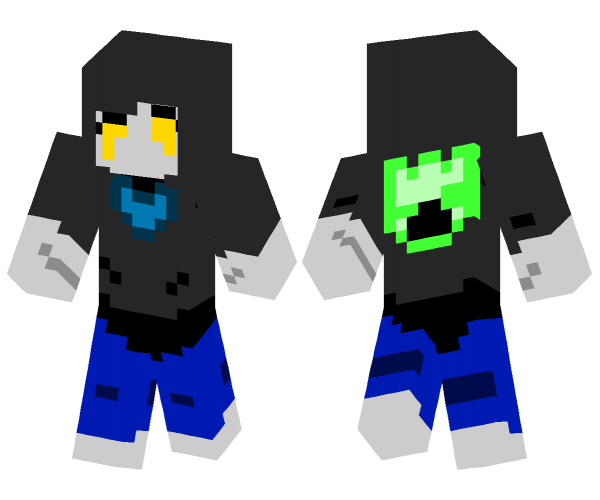
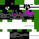
No Future (Zero)
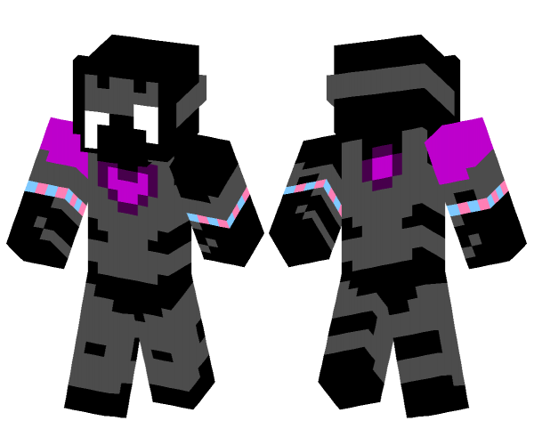
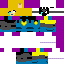
Ghost (Invert)
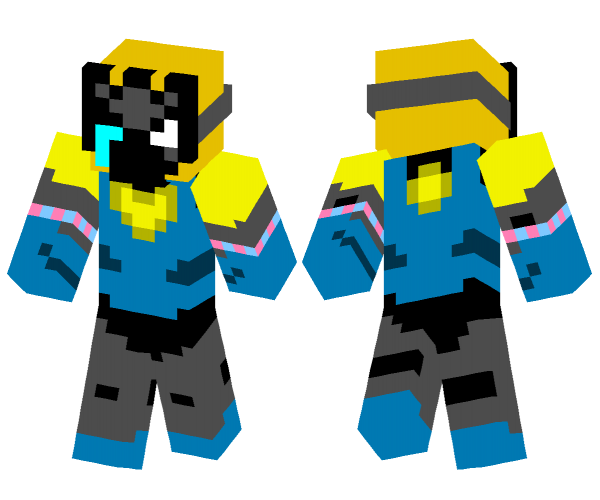
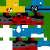
Conqueror of Eternity
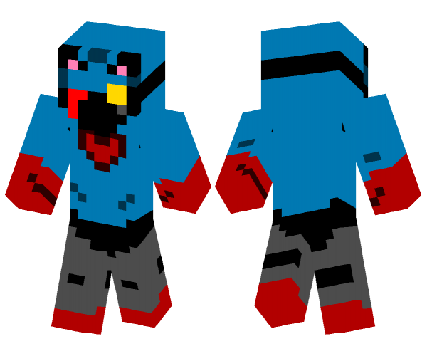
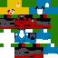
Conqueror of Eternity
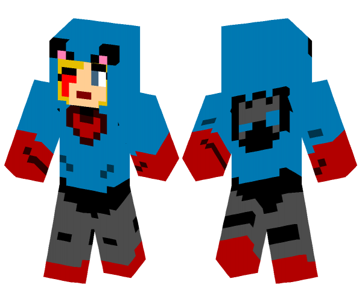
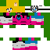
Master of Ice (Trans Pride)
 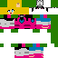
Master of Ice (Trans Pride)
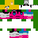
Master of Ice (Trans Pride)
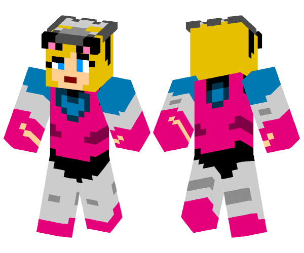
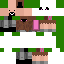
Catgirl Notch (Edit)
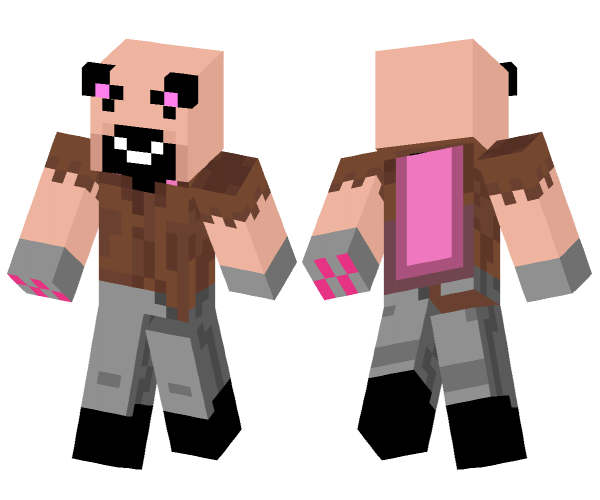
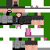
Catgirl Notch (Redraw)
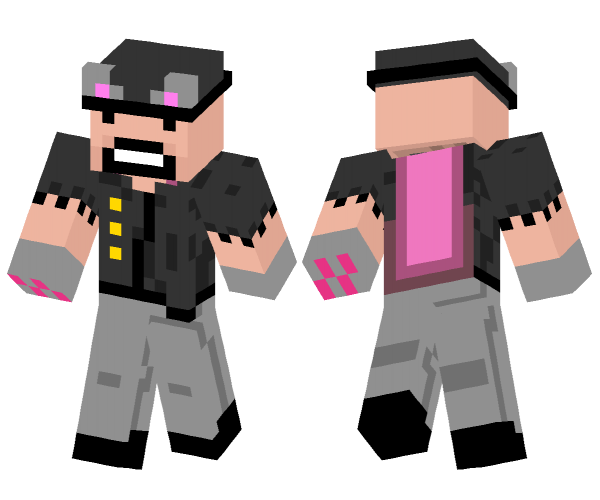
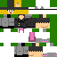
Catgirl Notch (QSKSw)
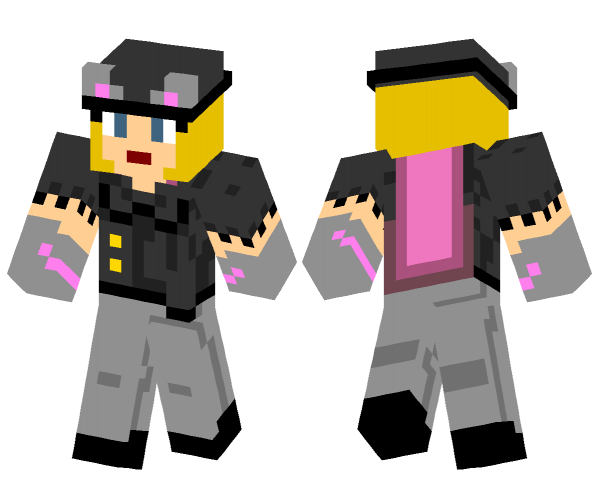
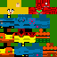
Samus (ScrewAttack Commemoration)
3D Skin Previews generated with Minecraft Skin Viewer by Minecraft User "DerFlash."
[ Back to Home ]